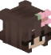
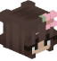

Info sul server
Benvenuto/a nel Server di ziofede82! Un server creato per giocare insieme alla community, con eventi, survival e tante piccole chicche personalizzate (skript, menu, key, lobby, ecc.).
Versione consigliata: Java 1.21.10
Hosting: Aternos
Tipo: Survival
Modalità principali
Survival
Survival classico con qualche plugin in più: crate, vote key, lobby, comandi personalizzati e piccole qualità della vita.
Lobby & Social
Una lobby curata dove puoi usare comandi come /social,
/donazione, /lobby e incontrare gli altri player.
Eventi & Live
Eventi speciali durante le live di ziofede82: sfide, minigiochi, premi esclusivi e tanto caos divertente.
Come entrare nel server
- Apri Minecraft Java (versione 1.21.10 consigliata).
- Vai su Multiplayer → Aggiungi server.
- Inserisci l’IP:
Fede82.aternos.me. - Entra, leggi le regole in lobby e inizia a giocare!
 

Social & Community
Resta aggiornato su eventi, live e novità del server.
Discord
Entra nel server Discord ufficiale.
TikTok
Clip, momenti epici e meme dal server.
Donazioni
Supporta il server e le live di ziofede82.
Chi dona può ricevere il ruolo VIP in game e un ringraziamento speciale in live.